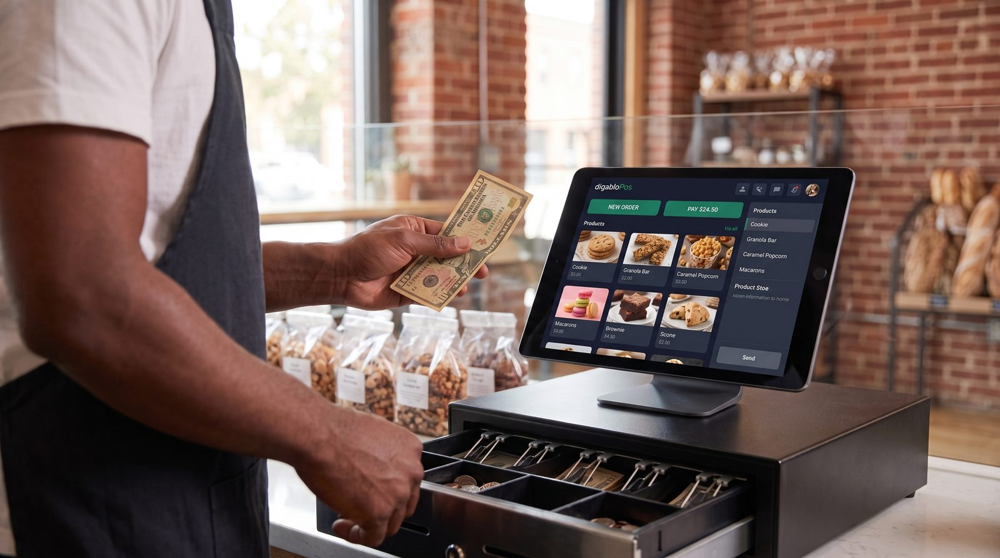

Logiciel de caisse chocolaterie : bien choisir en 2026
Tenir une chocolaterie ou une confiserie, c'est un métier à part : on vend des truffes au poids et des tablettes à la pièce, on prépare des coffrets sur mesure, on jongle avec des dates limites de consommation courtes, et toute l'année se joue sur quelques pics énormes, Noël, Pâques, la Saint-Valentin, la fête des mères. Une caisse enregistreuse classique montre vite ses limites. Voici comment choisir un logiciel de caisse chocolaterie qui colle vraiment à votre métier, et quelle solution nous recommandons.

Pourquoi un logiciel de caisse spécial chocolaterie ?
Un chocolatier ne vend pas comme une boutique de prêt-à-porter. Le produit est fragile, périssable et précieux : un ballotin de ganaches a une durée de vie de quelques jours, et le cacao reste une matière première coûteuse qu'on ne peut pas gaspiller. Surtout, le mode de vente change selon le client et la saison : au poids pour le vrac (chocolats à l'unité, pâtes de fruits, dragées, calissons), à la pièce pour une tablette ou un éclair, et au coffret pour un cadeau ou une commande d'entreprise.
Une caisse enregistreuse « tiroir + ticket » sait encaisser, point. Un véritable logiciel de caisse chocolaterie, lui, relie l'encaissement à la balance connectée, à la gestion des stocks et des DLC, aux commandes personnalisées et aux comptes clients. C'est cette intégration qui fait gagner un temps précieux les jours d'affluence, un 24 décembre, chaque seconde au comptoir compte, et qui évite les oublis coûteux (un coffret de Pâques commandé mais non préparé, ça ne se rattrape pas).
Les 7 besoins propres au métier de chocolatier-confiseur
1. Vente au poids ET à la pièce
C'est la spécificité numéro un. Votre caisse doit calculer un prix au kilo à partir d'une balance connectée pour le vrac (assortiments de chocolats, pâtes de fruits, dragées, nougats), tout en encaissant à l'unité une tablette ou une pâtisserie, et au forfait un coffret garni. Le même produit peut d'ailleurs basculer d'un mode à l'autre selon la période. Sans cette double logique, vous perdez du temps et de la précision à chaque vente.
2. Coffrets et commandes personnalisées
Le ballotin composé « à la main » par le client, le coffret de fin d'année, la commande d'un mariage ou d'un baptême : ces ventes se préparent à l'avance, se chiffrent parfois en devis et se règlent parfois en deux fois (acompte puis solde). Le logiciel doit conserver le détail de la composition, la date de retrait souhaitée et l'historique des acomptes, pour ne rien oublier le jour J.
3. Gestion des stocks et des DLC
Les chocolats frais, ganaches et confiseries ont une date limite de consommation courte. Suivre les lots, les ventes et les pertes (invendus, casse, démarque) est essentiel pour produire au plus juste et limiter un gaspillage particulièrement onéreux sur des matières nobles. Un suivi par date aide à écouler en priorité ce qui doit l'être et à connaître sa marge réelle.
4. Pics saisonniers maîtrisés
Quatre temps forts concentrent une part énorme du chiffre d'affaires : Noël, Pâques, la Saint-Valentin et la fête des mères. Ces jours-là, la rapidité d'encaissement et la stabilité de la caisse sont déterminantes. Préparer ses articles saisonniers (moulages, œufs, cœurs en chocolat, coffrets) à l'avance permet de les retrouver d'un geste plutôt que de tout ressaisir.
5. Plusieurs vendeurs au comptoir
En période de fêtes, on embauche des extras et plusieurs personnes encaissent en même temps. Le logiciel doit gérer plusieurs vendeurs (suivi des ventes par employé, ouverture de session rapide, droits différenciés) sans ralentir la file. C'est aussi un bon moyen de mesurer la performance et de fluidifier les jours de rush.
6. Boutique + entreprises et cadeaux d'affaires
À côté de la vente boutique aux particuliers, beaucoup de chocolatiers livrent des cadeaux d'affaires et des coffrets pour les entreprises, souvent réglés sur facture en fin de mois. La gestion des ardoises (crédit client) enregistre la vente immédiatement et suit l'encours de chaque compte pro, puis facilite la facturation périodique.
7. Fidélité et TVA multi-taux
Un programme de fidélité entretient le réflexe « petit plaisir du week-end » et fait revenir la clientèle de quartier. Côté fiscalité, la chocolaterie applique plusieurs taux de TVA selon les produits (la confiserie et certains chocolats relèvent de taux différents de ceux d'un produit à consommer sur place, par exemple). La caisse doit ventiler automatiquement la bonne TVA par article pour éviter les erreurs de déclaration.
Les critères pour bien choisir votre logiciel
Au-delà des fonctions métier, voici ce qui distingue une bonne solution d'une mauvaise surprise :
- Coût réel sur 12 mois : méfiez-vous des « gratuits » qui prélèvent une commission sur chaque paiement par carte ou facturent chaque module indispensable.
- Mode hors ligne : un samedi de Noël, vous ne pouvez pas vous permettre une caisse bloquée par une coupure réseau. Exigez une synchronisation automatique au retour d'Internet.
- Vente au poids native : la connexion à une balance et le calcul automatique du prix au kilo ne doivent pas être un bricolage.
- Conformité NF525 et préparation à la facturation électronique (voir plus bas).
- Modules à la carte : on n'active stocks, fidélité ou commandes que lorsqu'on en a besoin.
- Matériel libre : tablette Android, iPad ou PC, sans terminal propriétaire imposé.
- Prise en main rapide : en boutique, on n'a pas le temps de suivre une formation de trois jours, surtout avec des extras saisonniers.
Le bon réflexe : calculez le coût sur une année complète, commission comprise, et pas seulement le prix affiché « 0 € ».
Notre solution recommandée pour les chocolateries
digabloPos
digabloPos coche les cases qui comptent vraiment pour une chocolaterie. Le plan de base est gratuit à vie (sans date limite, sans carte bancaire), et il inclut ce que beaucoup font payer : la vente au poids et à la pièce, un vrai mode hors ligne avec synchronisation automatique, la gestion des stocks pour piloter une marchandise périssable, et la gestion des ardoises / crédit client pour vos commandes d'entreprise réglées sur facture. On l'installe en quelques minutes, et on ajoute des modules (fidélité, commandes, etc.) seulement quand le besoin se présente. Côté conformité, la solution est certifiée NF525 et prête pour la facturation électronique.
👍 Points forts
- Gratuit à vie, sans engagement
- Vente au poids / à la pièce
- Mode hors ligne + synchro automatique
- Gestion des stocks (produits périssables, DLC)
- Modules à la carte, on ne paie que l'utile
- Certifiée NF525
- Prête pour la facturation électronique
- Gestion des ardoises / crédit client
👎 À noter
- Marque plus récente que certains historiques du secteur
- Certains modules avancés sont payants
Envie de tester sans rien dépenser ?
Le plan de base de digabloPos est gratuit à vie, prêt en quelques minutes, sans carte bancaire.
Essayer digabloPos gratuitementTableau comparatif des fonctions clés
Voici les fonctionnalités à vérifier avant de choisir, et pourquoi elles comptent pour une chocolaterie ou une confiserie :
| Fonction attendue | Pourquoi c'est utile au chocolatier | digabloPos |
|---|---|---|
| Plan gratuit à vie | Encaisser en règle sans abonnement dès le départ | Oui |
| Vente au poids / à la pièce | Vrac au kilo (balance) et unités / coffrets | Oui |
| Mode hors ligne | Continuer à vendre un jour de pic même sans réseau | Oui |
| Gestion stocks / DLC | Suivre les pertes d'une marchandise périssable | Oui |
| Ardoises / crédit client | Cadeaux d'affaires réglés sur facture | Oui |
| Modules à la carte | Ajouter fidélité ou commandes au besoin | Oui |
| Certifiée NF525 | Obligation légale anti-fraude TVA | Oui |
| Facturation électronique | Anticiper la réforme en cours | Prête |
Les fonctionnalités et tarifs des éditeurs évoluent et varient selon le pays : vérifiez toujours sur les sites officiels avant de choisir.
Bien maîtriser les pics saisonniers
La saisonnalité est le défi numéro un de la chocolaterie. Quatre moments font l'année :
Noël et fin d'année (décembre)
Le plus gros pic pour la plupart des maisons : coffrets, ballotins, calendriers de l'avent, cadeaux d'affaires. Files au comptoir, plusieurs vendeurs en parallèle, commandes à préparer à date. La rapidité d'encaissement, le mode hors ligne et la gestion des commandes datées sont déterminants.
Pâques (mars / avril)
Moulages, œufs, poules et fritures : une production intense et des DLC à surveiller de près. Anticipez les quantités grâce à l'historique de l'an dernier dans votre logiciel, et suivez la démarque en temps réel pour ne pas couler du chocolat qui finira invendu.
Saint-Valentin (14 février)
Forte demande de coffrets « cœur » et d'assortiments cadeaux, souvent achetés à la dernière minute. Préparez vos articles « Saint-Valentin » à l'avance pour les retrouver d'un geste au comptoir.
Fête des mères (fin mai)
Un autre temps fort « cadeau » : ballotins, écrins, vente à la pièce comme au poids. Là encore, l'historique de la caisse aide à produire et commander au plus juste, entre rupture et surplus.
Conformité : NF525 et facturation électronique
Depuis 2018, tout commerçant assujetti à la TVA qui enregistre les règlements de ses clients particuliers doit utiliser un logiciel de caisse respectant les conditions d'inaltérabilité, de sécurisation, de conservation et d'archivage des données. La certification NF525 est l'un des moyens reconnus d'attester cette conformité ; l'éditeur doit pouvoir vous remettre une attestation. Pour une chocolaterie qui applique plusieurs taux de TVA, une caisse qui ventile correctement chaque article est aussi un gage de sérénité au moment de la déclaration.
Par ailleurs, la facturation électronique entre progressivement en vigueur pour les entreprises françaises. Pour un chocolatier qui facture des comptes pros (cadeaux d'affaires, coffrets d'entreprise), choisir dès maintenant une caisse prête pour la facturation électronique évite d'avoir à tout changer plus tard. C'est l'un des arguments qui nous fait recommander une solution déjà conforme et évolutive.
Questions fréquentes
Un logiciel de caisse chocolaterie doit-il être certifié NF525 ?
Oui. Tout chocolatier ou confiseur assujetti à la TVA qui encaisse des particuliers doit utiliser un logiciel conforme à la réglementation anti-fraude (inaltérabilité, sécurisation, conservation, archivage). La certification NF525 atteste cette conformité ; demandez l'attestation à l'éditeur.
Comment vendre à la fois au poids et à la pièce ?
Un bon logiciel gère deux modes : le prix au kilo, calculé automatiquement via une balance connectée (chocolats en vrac, pâtes de fruits, dragées), et la vente à l'unité ou au coffret (une tablette, un éclair, une boîte garnie). Le même article peut être paramétré dans les deux logiques selon la saison.
Comment gérer les pics de Noël et de Pâques ?
Préparez vos articles saisonniers (coffrets de Noël, œufs et moulages de Pâques) à l'avance pour les retrouver d'un geste plutôt que de tout ressaisir. Un mode hors ligne évite la caisse bloquée un samedi d'affluence, et l'historique de l'an dernier aide à anticiper les quantités à produire et à commander.
La caisse peut-elle suivre les DLC des produits frais ?
Oui. Les chocolats frais, ganaches et confiseries ont une date limite courte. Un logiciel avec gestion des stocks permet de suivre les lots et les pertes (invendus, casse, démarque) pour produire au plus juste et limiter le gaspillage, particulièrement coûteux sur des matières nobles.
Faut-il un logiciel de caisse chocolaterie gratuit ou payant ?
Un plan gratuit bien conçu suffit pour démarrer et encaisser en règle. L'idéal : une solution gratuite à vie à laquelle on ajoute des modules à la carte (stocks, fidélité, vente au poids) seulement quand le besoin apparaît, plutôt qu'un abonnement coûteux dès le premier jour.
Prêt à équiper votre chocolaterie ?
Installez votre caisse chocolaterie gratuite en quelques minutes, sans engagement ni carte bancaire.
Créer ma caisse chocolaterie gratuite